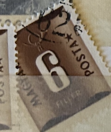
| SOURCE | TITLE| IMAGE MATCH | click to source page |
| WorthPoint | Framed Hanford Heirlooms Certified Public Accountant (CPA) 22 Cent Stamp Gift | #1846771408 | 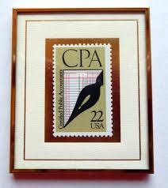 |
| eBay | Scott# 2361 22c CPA with "GIVE THE UNITED WAY" slogan ~ (A-1) | eBay | 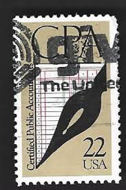 |
| Rhodesian Study Circle | SIR WILLIAM HENRY MILTON | 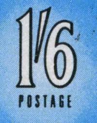 |
| eBay | 1882 STAMP US SCOTT 205 "Garfield" 5 CENT USED FANCY CANCEL CV $15 - A | eBay | 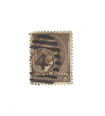 |
| eBay | 1987 Certified Public Accountants, Scott #2361, Mint Single Stamp, FREE SHIPPING | eBay | 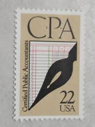 |
| The Itty Bitty Stamp Company | Italy Scott # Q94 Mint Hinged – The Itty Bitty Stamp Company | 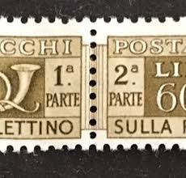 |
| Find Your Stamps Value | Value of helvetia 10 pax hominibus stamps | 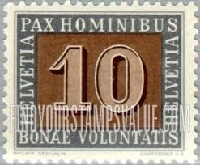 |
| Are stamps worth stated value? | 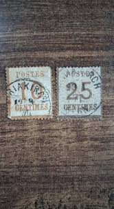 | |
| IG Stamps | All Postage Dues - Page 2 | 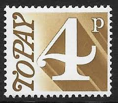 |
| Flickr | stamp - italia - priority | paolo | Flickr | 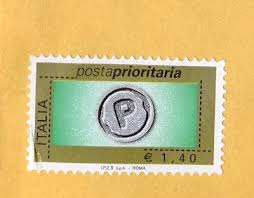 |
| Dreamstime | 1971 Penny Stock Photos - Free & Royalty-Free Stock Photos from Dreamstime |  |
| Stamp Community Forum | Canada Centennials Printing Varieties. - Stamp Community Forum | 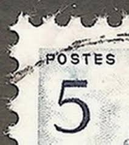 |
| eBay UK | Used Elizabeth II (1952-2022) Era Italian Stamps for sale | eBay UK | 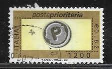 |
| eBay | Italy #J21 Used WDWPhilatelic (P5I) (10/24) 2 | eBay | 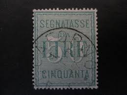 |
| Can anyone tell me if what type og stamp this is? Cant find them in my AFA catalog. Is it real stamps or just rubbish? Thanks for any answer. | 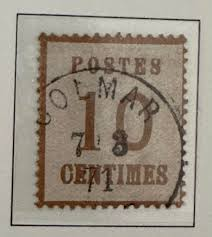 | |
| eBay | Magyar Posta 8 FILLER green used | eBay | 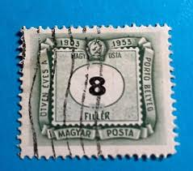 |
| Todocolección | sello italia postaprioritaria roma 0,60 € - Buy Antique stamps of Italy on todocoleccion | 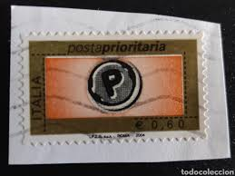 |
| Who can help me out, from wich countries are these stamps ? | 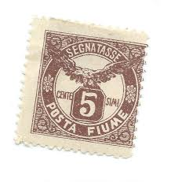 | |
| eBay.de | 42056 - GERMANY Ost Sachsen - STAMPS - Mi # 58 SHIFTED perforation - MNH | eBay.de | 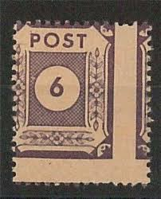 |
| eBay | ICOLLECTZONE O50 VF used | eBay | 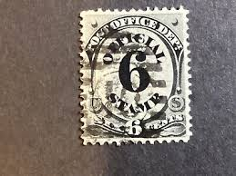 |
| eBay | ICOLLECTZONE O50 F/VF used light cancel | eBay | 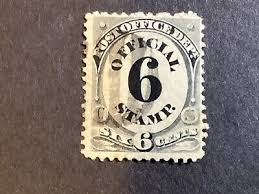 |
| eBay | FRANCE 1814 NANCY TO PARIS PRE STAMP LETTER 561(ZZ372) | eBay | 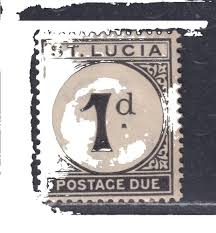 |
| eBay | 1926 Somalia Money Order Mint Hinged with Original Gum Complete Stamp Set | eBay | 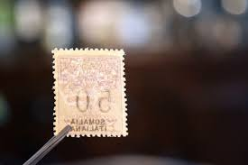 |
| Empirephilatelists.com | Chamba 1887 8a Dull Mauve SG012 Good MM Stamp|Empirephilatelists.com | 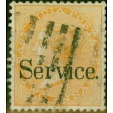 |
| eBay | Mint Never Hinged/MNH Tristan da Cunha Stamps for sale | eBay | 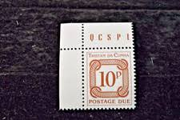 |
| eBay | Switzerland #88b used VF. Catalog $32.50 | eBay | 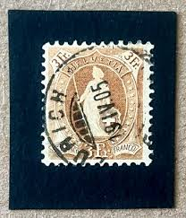 |
| eBay | Sweden #28 - Used WDWPhilatelic (T3A) (2/25) | eBay | 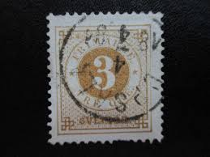 |
| eBay | Stamps Grenada Scott #J11 nh | eBay | 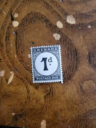 |
| eBay | Burelage Renversé And Mulhausen In Elsass On Alsace Lorraine No. 5b Side 38€ (1) | eBay | 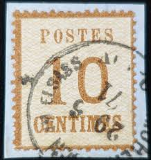 |
| eBay | Italy #J4 used e208 10840 | eBay | 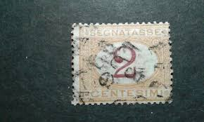 |
| safnari | INVERTED WATERMARK on a nicely corner cancelled copy of 5 kr | 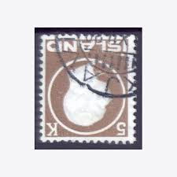 |
| Stamp Auction Network | Sparks Auctions Sale - 14 Page 20 | 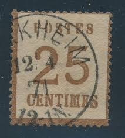 |
| eBay | Fiume, Scott J13, Postage Due, Eagle, 1919, MH | eBay | 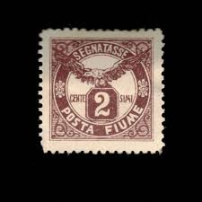 |
| eBay | SCOTT # 1474 STAMP COLLECTING 8 CENT STAMP - MNH | eBay | 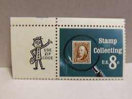 |
| philib.org | 129-133, 072-075 ? — LPS Forum | 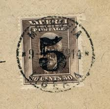 |
| aircheck24.com | Page not found | เช็คราคาแอร์ พร้อมทั้งเปรียบเทียบราคาเครื่องปรับอากาศ | 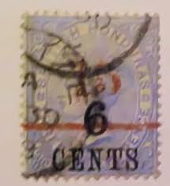 |
| eBay | Denmark #C10 Used- WDWPhilatelic (Q9V) (1/25) | eBay | 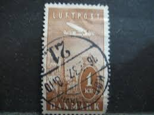 |
| eBay | Vintage Warm-O-Tray - MODEL #60 Pharmacy/United States 8 Cent Postage Theme(USA) | eBay | 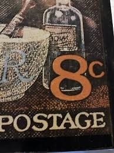 |
| eBay | One Penny Stamp Red for sale | eBay | 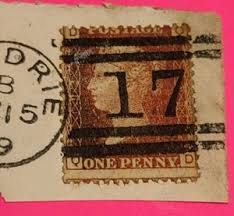 |
| eBay | Photo Essay, USA Sc1511 Liberty Bell | eBay | 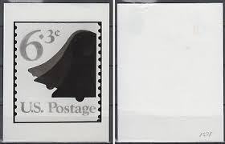 |
| eBay | LIECHTENSTEIN - Sc.#159 - VF Used - Prince Frank Joseph II - Postpd | eBay | 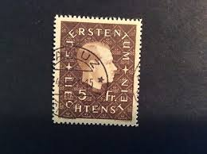 |
| eBay | STRASSBURG Im ELSASS (DEUTSCHER STEMPEL) ALSACE LORRAINE N°5 Wert 20€ (12) | eBay | 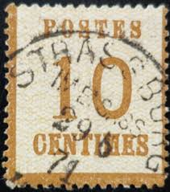 |
| Shutterstock | Dzerzhinsk Russia January 18 2016 Postage Stock Photo 376488106 | Shutterstock | 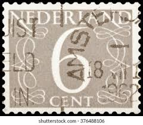 |
| eBay | AMERICA'S LIGHT SUSTAINED BY LOVE 50 CENT U.S. POSTAGE STAMP | eBay | 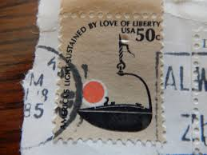 |
| eBay | 4 - 1968 US Stamp Scott #U551 - 6 Cent Liberty Envelope Cuts | eBay | 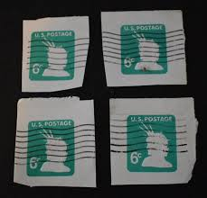 |
| Is this stamp from the Soviet occupation of eastern Germany rare and what is its value? | 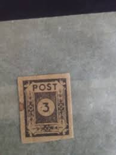 | |
| eBay | FRANCE STAMP #N1 ALSACE-LORRAINE OCCUPATION 1870 UNUSED | eBay | 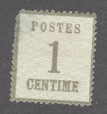 |
| eBay | KAPPYSTAMPS GREAT BRITAIN #95 1883 6d ON 6d USED NO THINS H437 | eBay | 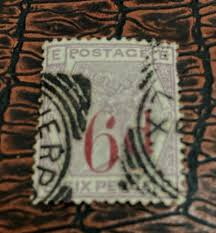 |
| eBay | Fiume, Scott J13, Postage Due, Eagle, 1919, used | eBay | 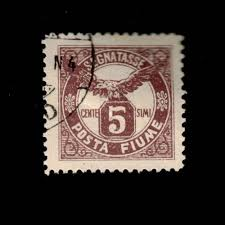 |
| eBay | ELSASS-LOTHRINGEN GERMAN STATES Mi. #3I scarce used stamp! CV $108.00 | eBay | 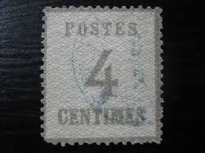 |
| eBay | Italian-Somalia Stamp Scott# J1 Postage Due 1906-08 Used L693 | eBay | |
| eBay | France #N13 unused no gum points down reprint e204 8587 | eBay | |
| eBay | Sweden #41 used pulled perf e206 9929 | eBay | |
| eBay | Italy #157 used perfin e1912.6045 | eBay | |
| eBay | PORTUGAL 1928 80c/$1.50 Used Ceres Surcharge Mi 502 Scott 484 XF 4900 | eBay | |
| eBay | Great Britain Stamp, Scott O36 Used | eBay | |
| eBay | Sweden #11 used a23.4 8940 | eBay | |
| Mystic Stamp Company | 75 - 1882 Switzerland - Mystic Stamp Company | |
| Freepik | Postage stamp isolated on a solid white background | Premium AI-generated image | |
| eBay | ELSASS LOTHRINGEN GERMAN STATES Mi. #7I scarce used stamp! CV $108.00 | eBay |